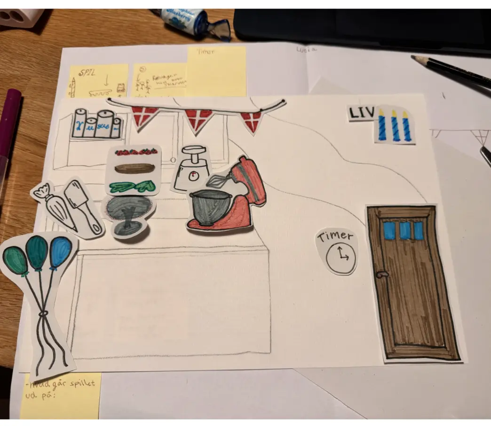
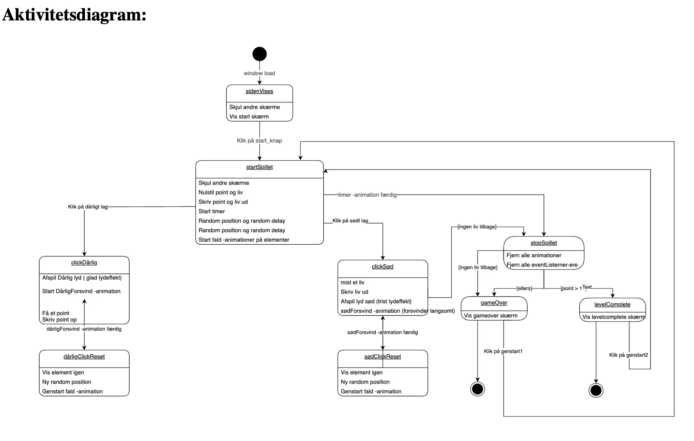
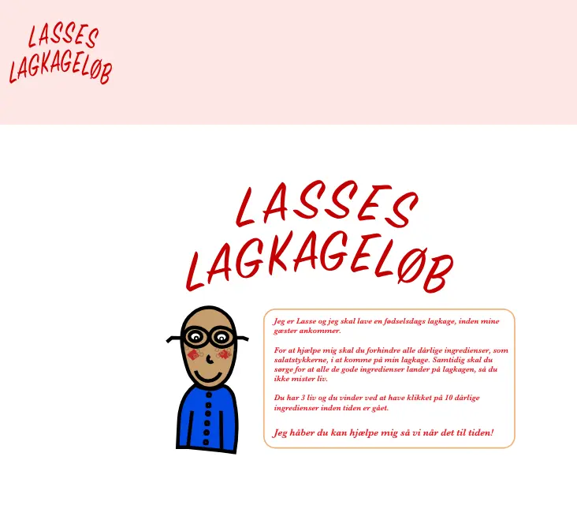
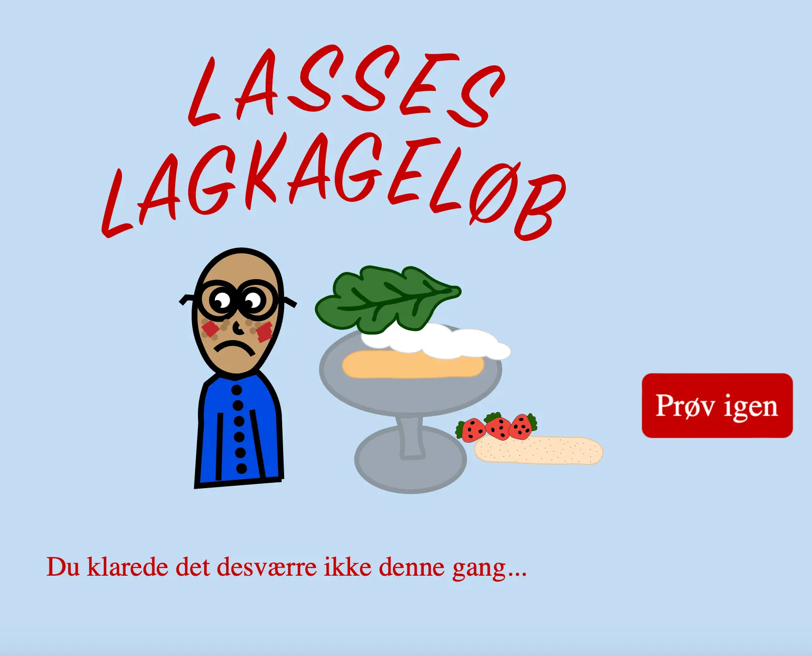

TEMA 4 - GRUNDLÆGGENDE ANIMATION
Formål med projektet:
I dette tema blev jeg introduceret til Javascript, for at kode et lille spil med HTML, CSS og Javascript.
Jeg skulle selv finde på en idé og designe alle elemneter selv samt kode spillet helt fra bunden.
Process og løsning:
- Jeg startede processen ud med at lave skitser i hånden af de elemneter jeg ønskede skulle indgå i mit spil, det var elementer som baggrund, forgrund, liv, tid og figurer.
- Efter at have lavet skitser i hånden og udviklet mit spildesign, burgte jeg Adobe Illustrator til at rentegne grafikken.
- Jeg lavede aktivitets/statemachine diagrammer for at afgøre hvordan spillet skulle forløbe, hvornår man mistede liv og vandt point, altså planlægge det interaktive flow med javascrpit.
- Jeg kodede sitet med viden jeg før har lært og ny viden, jeg programmerede start/stop animationer, klik-evnets, livtab, points og tab/vind-events
- Sidst uploadede jeg spillet til mit eget domæne og testede det.
Hvad jeg lærte:
- Jeg lærte at kode dynamiske interaktioner i Javascript og animere elementerne med CSS-animationer.
- Jeg lærte at bruge programmer som Adobe illustrator til tegne vektor elementer, og Adobe Audition til at redigere lydeffekter.
- Jeg lærte hvad man bruger et statemachine-diagram til.
- Jeg lærte at fejlfinding i kode kun gør min forståelse bedre.
Se mit projektet her:
Mit pil



